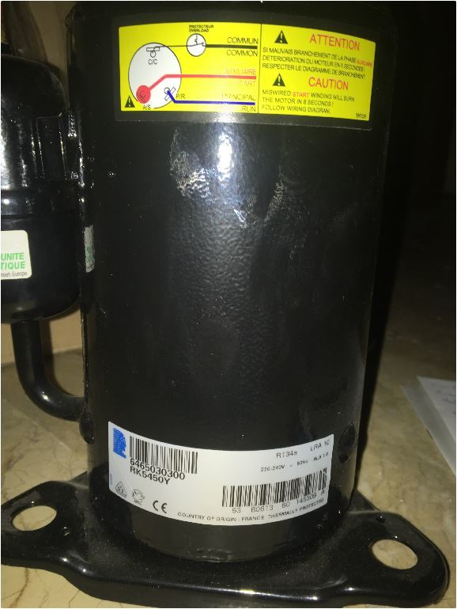

☎ 0216 344 48 19

Product Specifications Performance Refrigeration Capacity Input Power Efficiency EVAP TEMP COND TEMP AMBIENT TEMP RETURN GAS LIQUID TEMP Condition Test Voltage Btu/h kcal/h W W Btu/Wh kcal/Wh W/W EN12900 230V ~ 60HZ 4778 1204 1400 488 9.79 2.47 2.87 5°C (41°F) 50°C (122°F) 32°C (90°F) 15°C (59°F) 50°C (122°F) EN12900 230V ~ 50HZ 3771 950 1105 461 8.18 2.06 2.4 5°C (41°F) 50°C (122°F) 32°C (90°F) 15°C (59°F) 50°C (122°F) General Evaporating Temp. Range: -15°C to 15°C (5°F to 59°F) Motor Torque: Low Start Torque (LST) Compressor Cooling: Fan Mechanical Weight: 12 Weight Unit of Measure: KG Displacement (cc): 11.4 Oil Type: Polyvinylether Viscosity (cSt): 68 Oil Charge (cc): 414 Electrical Voltage Range (50 Hz): 207-253 Voltage Range (60 Hz): 207-253 Locked Rotor Amps (LRA): 25 Rated Load Amps (RLA 50 Hz): 2.6 Rated Load Amps (RLA 60 Hz): 3.8 Max. Continuous Current (MCC in Amps): 5.6 Motor Resistance (Ohm) - Main: 2.5 Motor Resistance (Ohm) - Start: 6.7 Motor Type: PSC Overload Type: N/A Relay Type: N/A Agency Approval CCC Listed, CE Listed, UL Recognized
| Ürün Kodu | RK5450Y |
|---|---|
| Marka | Tecumseh |
| Temin Durumu | Temin Edilebilir |
Sıfır ürünlerde üretici garantisi; revizyonlu / 2.el ünitelerde ürüne göre 6–12 ay Klimasun garantisi. Kapsam teklifte belirtilir.
Stoktaki ürünler aynı iş günü kargoya verilir; stokta olmayanlar Almanya ve İtalya'dan sipariş üzerine orijinal olarak temin edilir.
2004'ten beri endüstriyel iklimlendirmede Erdinç Klima güvencesi; F-Gaz / EKOMVET yetkinliği, kurumsal e-fatura ve teknik destek.
Bu model için yedek parça ve muadil seçenekleri için kodu bize iletin: Tecumseh ürünleri · muadil ürünler · servis & bakım.
Evet. Tecumseh RK5450Y arızalı ünitelerine bakım, kompresör değişimi, gaz şarjı ve revizyon dahil servis veriyoruz.
Stok durumuna göre sıfır, revizyonlu 2. el veya sipariş üzerine temin edilebilir. Teklif formundan sorabilirsiniz.
Uygun muadil / eşdeğer ürünler için kodu bize iletin; güncel Rittal ve MKS Clima muadilleri önerilir.